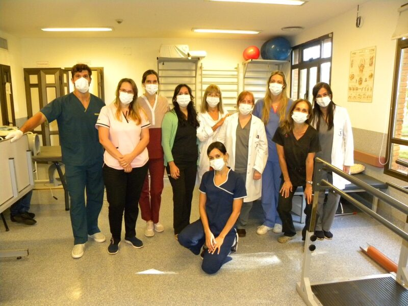

Profesionales: Protocolo COVID-19

El centro AKIN fue fundado en el año 1960 por el Prof. Dr. Floreal Carballo (6/2/18 - 5/4/82).
El Dr. Carballo ha sido uno de los grandes maestros y uno de los introductores de la acupuntura en América Latina; con él se formaron muchos de los médicos argentinos, latinoamericanos y de habla hispana.
A partir de 1982 y hasta la actualidad, la institución se encuentra dirigida por la Dra. Diana Carballo, hija del Dr. Floreal Carballo, quien fuera también su primer y más importante maestro.
Son nuestros objetivos:
>>> Estudiar y enseñar la Acupuntura, Microsistemas y otras temáticas de la Medicina Oriental.
>>> Brindar un ámbito de calidad para la atención clínica.
>>> Apoyar la Investigación en Acupuntura, Auriculoterapia y Microsistemas.
>>> Enseñar estas técnicas a los profesionales de la salud.
>>> Fomentar la enseñanza y actividades tendientes a incorporar la Acupuntura y la Medicina Oriental a la práctica cotidiana de los profesionales en nuestro país y en América Latina.
>>> Difundir información sobre la Medicina Oriental al público en general.
A lo largo de su historia, AKIN ha organizado y continúa realizando diversas actividades, tendientes a cumplir con los objetivos planteados: simposios, congresos nacionales e internacionales, jornadas de actualización, mesas redondas, viajes de investigación, diversas conferencias y presentaciones en hospitales, entidades de bien público, programas de televisión, radio, etc.